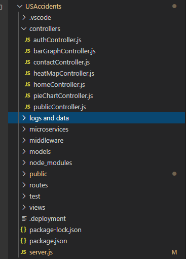
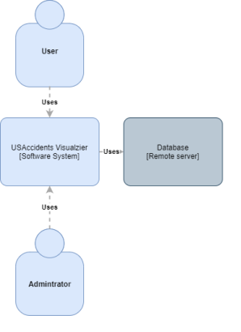
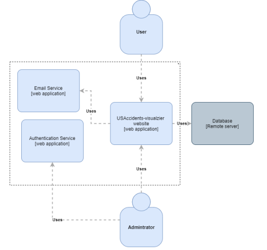
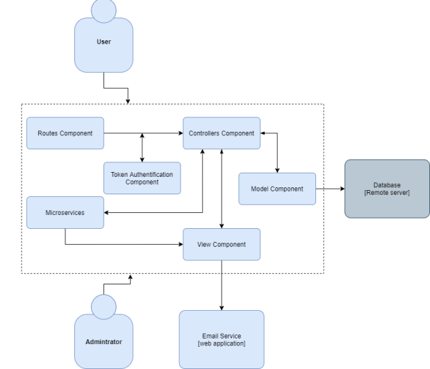
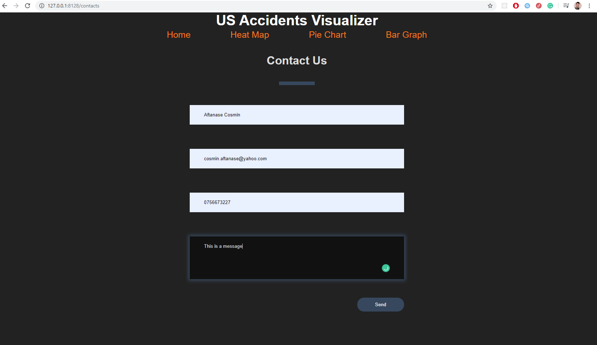
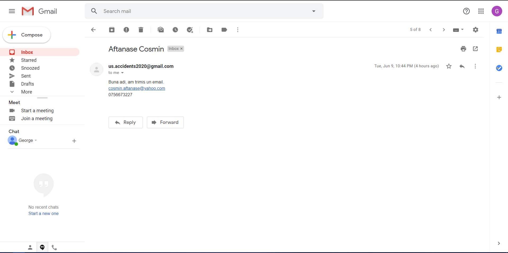
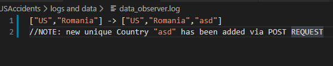

US Accidents Visualizer Report
1. Abstract
This application represents a flexible web tool used for data visualzation of accidents in the USA.
2. Introduction
This website offers the user the posibility to manipulate data using interactive tools.
It provides a multi-criterial search to show different graphs and cartographical representations of a 3
million record document
regarding accidents from the USA.
It also has an administrative module for adding data to the database.
3. Structure
3.1. Arhitecture
For our project we used for our arhitecture Model-View-Controller (MVC).
It is an arhitectural pattern that separates an application
into three main logical components: the model, the view and the controller.
Each of these components are built to handle specific development aspects of an application.

Advantages of this arhitecture:
- Easy for multiple developers to collaborate and work together.
- Code modularization
- Development of the application becomes fast.
- Modifications of the apllication do not affect other parts
- Scalability
- Easier to maintenance by keeping the view and the data-manipulating logic separate
- Easier to Update the application (extensiblity)

3.2. C4 Diagram
Context

Containers

Components

4. Database
MongoDB stores accidents data, admin credentials, and available values for the
multi-criterial search tool.
Intially the database was hosted on cloud on Atlas but due to space limitation (only 500mb were free),
we moved it to a server. It contains approximately 6gb of data plus indexes.
5. MVC
5.1 Model
The Model is responsible for getting and manipulating the data, so it's basically the brain of the
application.
It interracts with our MongoDB database, where it stores accidents data, admin user data, and available
values for the
multi-criterial search tool.
5.2 View
Next, we have the view and you can probably guess what that takes care of. That's the actual view of the
application, so it's the user interface, it's what the user sees and how they interact with the application.
So the view usually consists of HTML and CSS along with dynamic values from the controller. So the
controller communicates with the view as well as the model. Now, depending on which framework you use, the
template engine may vary.
The template engine is what allows dynamic data. If we have straight HTML, we can't output variables, we
can't use logic, select an if statement, etc., but, with template engines, we can do that stuff right in the
view or right in the template.
5.3 Controller
So, finally, we have the controller and the controller takes in user input, so this could be from the user
visiting a page or clicking a link which makes a get request or submitting a form which makes a post request
and we also have delete requests or put requests for updating. And these can't be made directly from the
browser, you can only do a get or a post but we do have HTTP clients that are at times built in with the
framework, that can do that.
Now the controller acts as kind of a middleman between the model and the view. The controller will ask the
model to get some data from a database and then the controller will take that data and load a view and pass
that data into it. Then, from there, the template engine takes over and can basically do some logic, output
variables, and things like that.
The controller can also load a view without passing it data, so just a plain web page with HTML and CSS, no
actual templating logic.
Here's a very simple example or diagram.
Now we have the user, who sees the view of the application in the browser, and the app can make some kind of
requests with input to what's called a router. And their request could be some kind of link that they
clicked on some kind of route.
Then the router will call a specific controller method based on that route and if data is needed or if you
need to fetch some data, the controller will then interact with the model, which interacts with the
database. Then, once the controller gets that data passed back, it can then load a view and it can send the
data to the view and it'll get dealt with by the template engine.
Once that's all done it'll send the view back to the browser for the user to see.
7. Use-cases
- The user can enter the site and view the map and the points where the accidents occurred according
to the input criteria.
- The user can also download the generated map in png, csv and svg format.
- The user can enter the site and can navigate to the other pages using the top nav
- The user can enter the Heat Map page and can view on the map each state with a different color
depending on the criteria of the chosen accidents.
- The user can enter the Heat Map page and can download the generated map in jpg and csv format.
- The user can enter the Pie Chart page and can view a pie chart with all states according to the
chosen accident criteria.
- The user can enter the Pie Chart page and can download the generated chart in jpg or csv format.
- The user can enter the Bar Graph page and can view a graph in which on the horizontal axis is
the number of accidents chosen according to the criteria, and on the vertical axis each state
separately.
- The user can enter the Contact page in which he can send an email to the project email.
- The user can enter the About page in which he can read the report.
8. API's
Project's APIs are the following:
- GET https://usaccidents-visualizer.herokuapp.com/home
It gets from the server the contents of the file home.hmtl .
Returns: text/html
-
GET https://usaccidents-visualizer.herokuapp.com/records/:id (Alex)
Gets the document from the database by its ID.
Returns: application/json with all info from database about that document
-
PATCH https://usaccidents-visualizer.herokuapp.com/records/ (Cosmin)
Requires authentication token.
Updates the document from the database by it's ID.
Body:
{
"ID" : "B-1",
"Country" : "Romania"
}
Returns: application/json
{
"Response": "1 fields updated with Success!",
"Response Code": 200
}
-
POST https://usaccidents-visualizer.herokuapp.com/records/ (Alex)
Requires authentication token.
Creates/Updates a document in the database by the specified ID.
Body:
{
"ID" : "B-1",
"Country" : "Romania"
}
Returns: application/json
{
"Response": "Success!"
}
-
PUT https://usaccidents-visualizer.herokuapp.com/records/ (Cosmin)
Requires authentication token.
Creates/Updates a document in the database with the specified ID.
Body:
{
"ID" : "B-1",
"Country" : "Romania"
}
Returns: application/json
{
"Response": "Object created with Success!",
"Response Code": 201
}
{
"Response": "1 fields updated with Success!",
"Response Code": 200
}
-
DELETE
https://usaccidents-visualizer.herokuapp.com/records/:id (Adrian)
Requires authentication token.
Deletes a document in the database by its ID.
Returns: application/json
{
"Response": "Success"
}
All CRUD operations return 403 if invalid/missing token has been provided.
9. Technologies
1. Node JS
Node.js is an open-source runtime environment that we used for developing our server-side.
We chose Node due to its popularity and its beginner-friendly learning curve, Javascript being an easy
language
to learn that we also use in the front end of our application.
2. MongoDB
MongoDB was used because of its popularity with Node.js (in MERN/MEAN Stacks)
and also because of how the data is structured in a MongoDB collection: in (Binary) JSON format.
JSON stands for JavaScript Object Notation and our api's also returns and works with JSON so
the choise was evident.
In this project we used Mongoose as the mongodb framework.
3. HTML5, CSS3, JavaScript
HTML and CSS were used to create the UI, whereas JavaScript was used for creating functionalities and
cartographical representations and also used for dynamically creating html elements.
HTML, CSS and JavaScript are the main parts of the front-end of our application.
4. Version Control
GitHub - We used a private repository on GitHub. Github was used because it is free, popular and
reliable.
5. Data visualization libraries
Google Charts - Used to create heat map and pie chart representations. (Alex)
Openlayers - Used to create main page map that renders the points. (Cosmin)
ChartJS - Used to create the bar graph page. (Adrian)
All are free open-source javascript libraries
6.Unit testing
We've used Mocha framework for testing GET requests on different routes, including undefined routes.
(Alex)
The other suite tested weather the data that has been added was also in dava_values database wich holds all
the unique posible values for any given column. (Cosmin)
10. Services
Authorization (decides weather you have the permission to access a resource)
(Alex)
The auth service lets the user login as administrator using a POST request, sending a username and a
password;
If the credentials are correct, the user gets a JWT token, used for later authentication.
Then the user could send the JWT using a GET to verify the token.
SQL Injection has been prevented by checking wether the '$' exists in the body requests, and if so, the
whole body is turned into null;
Before:

After:

Register (create an authorized account)
(Alex)
The register service requests a JWT to create a new account, meaning the user needs to auth first in order
to get the JWT.
Afterwards, the user could create new accounts using POST request, sending the username and password in the
body of the request.
Email
(Adrian)
We have a Contacts web page in which the user can enter data and send it to our email service which uses
Nodemailer npm package to send it to a special gmail account made for this website.


11. Microservices
Data Observer
(Cosmin)
Our Select Generator that creates selectors for every column from database is created dynamically by
Javascript at runtime.
We don't want the values from each select generated by Select Generator to be hardcoded/written manually
into tool.js
everytime we add something new via POST/PUT/PATCH requests. They are monitored and written by "Data
Observer"
who has it's own database of each unique values for each colomn from the main database.
Data Observer listens for CRUD operations and checks if a new unique value for a given column has been
added.
If so, it will automatically update the "tool.js" file next time the server is restarted and will also
generate a Log File
with the changes made.

HTMLAux
(Cosmin)
We have separated our tool (select generator), footer and top nav into 3 different htmls,
each with its own css and/or javascript file.
HtmlAux reads these files at the start of the server, and given an html file that contains {tool}, {topnav},
{footer}
will act as a template engine and replace the words and the brace with coresponding html. In case of tool
witch has a lot of
render blocking javascript it will add that js file at the end of the html file, before the </body>
12. Responsabilities
Responsabilities in our MVC are as follow:
Cosmin : Responsible for homeController, homeView, homeRoutes, publicRoutes, 404 page, microservices
Data Observer and HTMLAux and collaborated with Alex on middleware/checkAuth
Alex : Responsible for heatMapController, pieChartController, heatMapView, pieChartView,
pieChartRoutes, heatMapRoutes, authentication service, register service and collaborated with Cosmin on
middleware/checkAuth
Adrian : Responsible for barGraphController, contactsController, barGraphView, contactsView, barGraphRoutes, contactsRoutes and email service
All three collaborated in publicController for the CRUD operation:
- CREATE: using POST request (Alex)
- READ: using GET request for an item from db (Alex) or for a normal html/css/js/image
(Cosmin)
- UPDATE: using PATCH/PUT request (Cosmin)
- DELETE: using DELETE request (Adrian)
All three collaborated in Model with the following functions:
- Cosmin: start, findCoordonates, update
- Alex : findByID, count, save
- Adrian: deleteByID